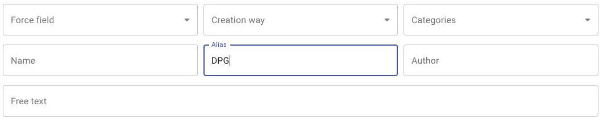
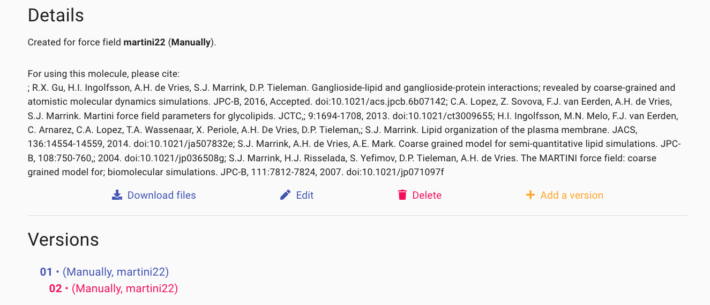

Database
In this tutorial you will learn about:
beenhere
No registration is required to access, search or download content from the MAD:Database
Search the database for molecules
The top side of the database welcome screen is dedicated to search parameters.

launch
Enter DPG in the Alias search field
Interactions in search results
As you are completing the search section, the table of molecule in the lower-half of the screen is refreshing
to display the rows of molecules matching you search.
launch
Click on the molecule named "DPG3"
The content of the molecule card
By default the HEAD version of a molecule is displayed.
Most of the time, this corresponds to the latest deposited coarse grained representation of the molecule.
The visualization screen of the molecular entry is divided into two parts.
keyboard_arrow_right
The top level part displays the name and alias of the molecule along with the comments section
of the molecule itp file.
An interactive viewer featuring the same color code as the MAD:Molecule Builder
allows for the visual inspection of the composition and configuration of the molecule.
keyboard_arrow_right
The lower part of the screen mentions publication details,
the version tree and gives access to the download section.

info_outline
You can navigate in the version tree and access to all molecular card of its elements.
Each element is a version of the same molecule with alternative an set of parameters or another
force-field version.
You can visit all our in store versions until you find the one matching you needs.
Contributing to the database
file_upload
You don't find your favorite molecule? Add it to the database! Contributions are welcome, we just ask you
to register and you will be able to curate and upload the molecule of your choice.
Your submission will be validated by our moderators prior to its addition to the database.
References
-
SJ Marrink, HJ Risselada, S Yefimov, DP Tieleman, AH De Vries. The MARTINI force field: coarse grained model
for biomolecular simulations. J Phys Chem B (2007) 111, 7812-7824. Doi: 10.1021/jp071097f
-
L Monticelli, SK Kandasamy, X Periole, RG Larson, DP Tieleman, SJ Marrink. The MARTINI coarse-grained force
field: extension to proteins. J Chem Theory Comput (2008) 4, 819-834. Doi: 10.1021/ct700324x
-
Souza, P.C.T., Alessandri, R., Barnoud, J. et al. Martini 3: a general-purpose force field for
coarse-grained molecular dynamics. Nat Methods (2021) 18, 382–388. Doi : 10.1038/s41592-021-01098-3